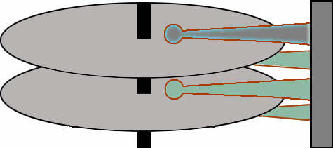
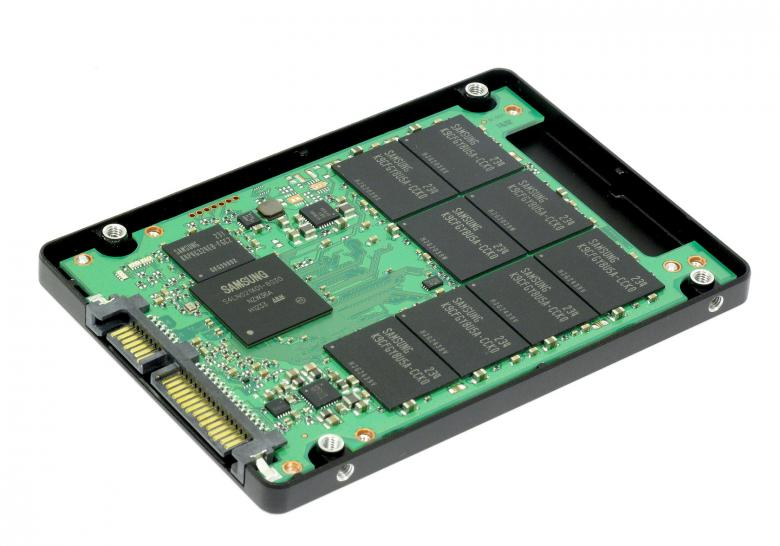

Ο σκληρός δίσκος είναι ένα μαγνητικό αποθηκευτικό μέσο - συσκευή που χρησιμοποιείται στους ηλεκτρονικούς
υπολογιστές, στις ψηφιακές βιντεοκάμερες, στα φορητά MP3 players, στα επιτραπέζια ψηφιακά βίντεο, στις
κονσόλες παιχνιδομηχανών, στους ψηφιακούς επίγειους και δορυφορικούς τηλεοπτικούς δέκτες κλπ.
Οι πάνω και κάτω όψεις ενός σκληρού δίσκου:
Αποθηκευτικότητα
Χώρος αποθήκευσης:
Ένας σκληρός δίσκος αποθηκεύει μεγάλες ποσότητες δεδομένων και η χωρητικότητα των σκληρών δίσκων που
κυκλοφορούν στο εμπόριο ξεκινά από τα 500 GB και φτάνει έως τα 6 ΤΒ. Για μεγαλύτερες χωρητικότητες που
αγγίζουν τα 12 TB (terabyte) χρησιμοποιούνται κυκλώματα πολλαπλών σκληρών δίσκων, με τη μορφή συρταρωτής διάταξης.
Τρόπος αποθήκευσης:
Τα δεδομένα αποθηκεύονται στον σκληρό δίσκο ως ακολουθίες bit (αφού οι υπολογιστές λειτουργούν με το
δυαδικό σύστημα). Οι κεφαλές γράφουν κάθε bit αλλάζοντας το μαγνητικό πεδίο στην επιφάνεια των μαγνητικών
δίσκων και το διαβάζουν απλώς αναγνωρίζοντας το μαγνητικό πεδίο. Κάθε bit δεδομένων καταλαμβάνει τον δικό
του χώρο στην επιφάνεια του δίσκου, ωστόσο οι ακολουθίες bit που αποτελούν τα δεδομένα, δεν είναι απαραίτητο
να εγγράφονται σειριακά στον δίσκο, αλλά είναι δυνατό να κατακερματιστούν και να εγγραφούν σε διάφορες θέσεις.
Ταχύτητα:
Η ταχύτητα προσπέλασης των δεδομένων είναι ταχύτερη από το DVD/R/RW αλλά πολύ πιο αργή από τη μνήμη του υπολογιστή.
Λανθάνων χρόνος περιστροφής (Latency):
Οι πλακέτες του σκληρού δίσκου περιστρέφονται με πολύ μεγάλη ταχύτητα και η ταχύτητα περιστροφής δεν είναι συγχρονισμένη
με τη διαδικασία κίνησης των κεφαλών ανάγνωσης/γραφής στο σωστό κύλινδρο σε μια τυχαία πρόσβαση ενός τομέα του δίσκου.
Επομένως, τη στιγμή που φτάνουν οι κεφαλές στο σωστό κύλινδρο, ο πραγματικός τομέας που χρειάζεται, μπορεί να είναι οπουδήποτε.
Λανθάνων χρόνος περιστροφής (latency) είναι ο χρόνος, τον οποίο ο οδηγός πρέπει να περιμένει μέχρι ο σωστός τομέας να φτάσει
κάτω από την κεφαλή ανάγνωσης/εγγραφής. Θεωρητικώς, ο χρόνος αυτός είναι πιο απλό να κατανοηθεί και να υπολογιστεί.
Όσο γρηγορότερα περιστρέφονται οι πλακέτες, τόσο πιο γρήγορα ο σωστός τομέας θα περιστρέφεται γύρω γύρω και τόσο λιγότερος θα είναι
ο χρόνος αναμονής γι' αυτόν. Κατά μέσο όρο, ο χρόνος αυτός θα είναι το μισό του χρόνου που χρειάζεται για μια ολόκληρη περιστροφή
του δίσκου. Αυτό προκύπτει από το γεγονός, ότι η καλύτερη περίπτωση είναι ο σωστός τομέας να βρίσκεται ακριβώς κάτω από την κεφαλή
την ώρα που αυτή θα φτάσει στο κατάλληλο ίχνος και η χειρότερη, μόλις να έχει περάσει από αυτήν, οπότε θα χρειαστεί μια ολόκληρη
περιστροφή του δίσκου. Ο παρακάτω πίνακας δείχνει το χρόνο αυτό για διάφορες ταχύτητες περιστροφής:
Όπως και με το χρόνο αναζήτησης, έτσι και ο λανθάνων χρόνος περιστροφής, μετριέται σε ms, κάτι το οποίο σημαίνει μεγάλο ποσό χρόνου
όταν μιλάμε για απόδοση συστήματος υπολογιστή. Μειώνοντας το λανθάνων χρόνο περιστροφής, θα έχουμε μεγάλη βελτίωση στην απόδοση του
υπολογιστή, ειδικά όταν ασχολούμαστε με τυχαία αρχεία του δίσκου. Επίσης, ο λανθάνων χρόνος περιστροφής είνα κατάλληλος μόνο σε συγκεκριμένους
τύπους προσβάσεων. Για πολλαπλές, συχνές αναγνώσεις τυχαίων τομέων πάνω στο δίσκο, είναι ένας σημαντικός παράγοντας περιορισμού της απόδοσης.
Για ανάγνωση μεγάλων, συνεχόμενων ομάδων δεδομένων, ο λανθάνων χρόνος περιστροφής είναι ένας ασήμαντος παράγοντας, γιατί θα συμβεί μόνο κατά την
αναμονή για τον πρώτο τομέα του αρχείου.
Χωρητικότητα και ταχύτητα προσπέλασης(Access time):
Η χρήση άκαμπτων υλικών και ή σφράγιση της μονάδας προσδίδει πολύ μεγαλύτερη αντοχή στους δίσκους σε σχέση με τις δισκέτα. Κατά συνέπεια,
οι σκληροί δίσκοι μπορούν να αποθηκεύσουν, να προσπελάσουν και να μεταφέρουν πολύ περισσότερα δεδομένα και σε λιγότερο χρόνο από ότι οι δισκέτες:
Τον Ιανουάριο του 2008, ένας τυπικός σκληρός δίσκος για επιτραπέζιο υπολογιστή (desktop), μπορούσε να αποθηκεύσει από 120 έως 1000 GB δεδομένων,
να περιστραφεί με ταχύτητες 5.400 έως 10.000 rpm και να μεταφέρει δεδομένα με ρυθμό 1 Gbit/s ή ταχύτερο. (1 GB = 109 B; 1 Gbit/s = 109 bit/s).
Τον Ιούλιο του 2008, η μέγιστη χωρητικότητα έφτασε το 1,5 TB ενώ το Σεπτέμβριο του 2009 ένας δίσκος έχει χωρητικότητα μέχρι και 2 TB.
Ο ταχύτερος σκληρός δίσκος επαγγελματικών προδιαγραφών περιστρέφεται με 10.000 έως 15.000 rpm, και μπορεί να επιτύχει μεταφορά δεδομένων με ρυθμό πάνω
από 1,6 Gbit/s και σταθερή ταχύτητα μεταφοράς μέχρι 125 Mbytes/sec. Οι δίσκοι που περιστρέφονται με αυτήν την ταχύτητα έχουν μικρότερα platters λόγω
της αντίστασης του αέρα και κατά συνέπεια έχουν και μικρότερη χωρητικότητα από την αντίστοιχη των δίσκων για επιτραπέζιους υπολογιστές.
Το Σεπτέμβριο του 2009 ο ρυθμός μεταφοράς δεδομένων αυξήθηκε στα 6Gbit/s με τη χρήση διπλού καναλιού SATA 3Gbit/s (από ανακοινώσεις κατασκευαστών)
διπλασιάζοντας με αυτό το τρόπο και την σταθερή ταχύτητα μεταφοράς στα 300Mbps.
Οι σκληροί δίσκοι για φορητούς υπολογιστές, που είναι συγκριτικά μικρότεροι σε μέγεθος από αυτούς για επιτραπέζιους ή τους επαγγελματικούς, τείνουν
να είναι και πιο αργοί αλλά και με λιγότερη χωρητικότητα. Ένας τυπικός δίσκος για φορητό υπολογιστή περιστρέφεται από 5400 rpm μέχρι 7200 rpm.
Εξαιτίας του μικρού μεγέθους τους, αυτοί οι δίσκοι έχουν αρκετά μικρότερη χωρητικότητα από τους μεγάλους δίσκους για επιτραπέζιους υπολογιστές.
Όπως και με το χρόνο αναζήτησης, έτσι και ο λανθάνων χρόνος περιστροφής, μετριέται σε ms, κάτι το οποίο σημαίνει μεγάλο ποσό χρόνου όταν μιλάμε
για απόδοση συστήματος υπολογιστή. Μειώνοντας το λανθάνων χρόνο περιστροφής, θα έχουμε μεγάλη βελτίωση στην απόδοση του υπολογιστή, ειδικά όταν
ασχολούμαστε με τυχαία αρχεία του δίσκου. Επίσης, ο λανθάνων χρόνος περιστροφής είνα κατάλληλος μόνο σε συγκεκριμένους τύπους προσβάσεων.
Για πολλαπλές, συχνές αναγνώσεις τυχαίων τομέων πάνω στο δίσκο, είναι ένας σημαντικός παράγοντας περιορισμού της απόδοσης.
Για ανάγνωση μεγάλων, συνεχόμενων ομάδων δεδομένων, ο λανθάνων χρόνος περιστροφής είναι ένας ασήμαντος παράγοντας, γιατί θα συμβεί μόνο κατά την
αναμονή για τον πρώτο τομέα του αρχείου.
Χρόνος εναλλαγής κεφαλής (Head switch time):
Κάθε κύλινδρος περιέχει έναν αριθμό από ίχνη, κάθε ένα από τα οποία είναι προσπελάσιμα από μια κεφαλή του δίσκου. Για να βελτιώσει την αποδοτικότητα,
ο οδηγός θα χρησιμοποιήσει όλα τα ίχνη ενός κυλίνδρου όταν κάνει μια διαδοχική ανάγνωση ή γραφή, επειδή αυτό μειώνει το χρόνο που απαιτείται, για να
μετακινηθούν οι κεφαλές σε ένα νέο κύλινδρο. Η εναλλαγή μεταξύ κεφαλών είναι μια καθαρά ηλεκτρονική διαδικασία και όχι μηχανική, όπως θα ήταν αν αλλάζαμε
κύλινδρο. Ωστόσο, η εναλλαγή μεταξύ κεφαλών μέσα στον ίδιο κύλινδρο, απαιτεί ένα συγκεκριμένο χρόνο που ονομάζεται χρόνος εναλλαγής κεφαλής (switch time).
Αυτός ο χρόνος είναι μικρότερος από το χρόνο που απαιτείται για αλλαγή κυλίνδρου. Ο χρόνος εναλλαγής κεφαλής ενός οδηγού δεν είναι συχνα ορισμένος.
Είναι, συγκριτικά με άλλους παράγοντες απόδοσης, κάτι ασήμαντο, αλλά θα πρέπει να γίνει αντιληπτό ότι ένας οδηγός με πολλές πλακέτες που κάνει μια
μεγάλη ανάγνωση ή γραφή, θα αλλάξει πολλές φορές κεφαλή, πολύ περισσότερες από ότι θα αλλάξει κυλίνδρους, άρα δεν είναι και τόσο ασήμαντος παράγοντας.

Εσωτερικός ρυθμός μεταφοράς δεδομένων:
Από τη στιγμή που ο προφανής σκοπός στη χρήση ενός σκληρού δίσκου, είναι να μεταφέρουμε δεδομένα από και προς αυτόν,
ο ρυθμός μεταφοράς δεδομένων είναι πολύ σημαντικός για την απόδοση. Είναι γεγονός ότι η μέτρηση αυτή είναι κάπως υποτιμημένη
σχετικά με το χρόνο αναζήτησης και το ρυθμό μεταφοράς του interface. Οι ρυθμοί μεταφοράς είναι όροι που προκαλούν σύγχυση,
επειδή η φράση "ρυθμός μεταφοράς" μπορεί να σημαίνει πολλά διαφορετικά πράγματα. Εδώ, λέγοντας ρυθμός μεταφοράς εννοούμε το
ρυθμό με τον οποίο ο δίσκος μπορεί να διαβάζει δεδομένα από την επιφάνεια των πλακετών και να τα μεταφέρει στην εσωτερική
κρυφή μνήμη του οδηγού, έτοιμα για αποστολή μέσω του interface στο σύστημα. Αυτός είναι ο εσωτερικός ρυθμός μεταφοράς δεδομένων
και είναι διαφορετικός από το ρυθμό με τον οποίο τα δεδομένα μεταφέρονται από την κρυφή μνήμη του δίσκου στο υπόλοιπο σύστημα,
ρυθμός ο οποίος ονομάζεται εξωτερικός ρυθμός μεταφοράς δεδομένων. Ο εσωτερικός ρυθμός μεταφοράς δεδομένων, ο οποίος είναι ο πραγματικός
ρυθμός με τον οποίο τα δεδομένα μπορούν να διαβαστούν από το δίσκο, συχνά ονομάζεται και υποστηριζόμενος ρυθμός μεταφοράς δεδομένων
(sustained data ternsfer rate), ενώ ο εξωτερικός ρυθμός ονομάζεται κορυφαίος ρυθμός μεταφοράς ή ρυθμός ματαφοράς κατά ριπή.
Ο λόγος που χρησιμοποιούνται αυτοί οι όροι, είναι γιατί ο εξωτερικός ρυθμός μεταφοράς είναι συνήθως πολύ υψηλότερος από ό,τι ο εσωτερικός.
Έτσι ο οδηγός μπορεί να στέλνει δεδομένα μέσω του interface, σε πολύ υψηλές ταχύτητες όταν βρίσκει αυτά τα δεδομένα ήδη τοποθετημένα στον buffer.
Αλλά ο buffer είναι πολύ μικρός σε σχέση με το δίσκο (μικρότερος από 1 MB), έτσι λοιπόν για την ανάγνωση μιας λογικής ποσότητας δεδομένων,
οι πλακέτες θα πρέπει να προσπελαθούν και φυσικά ο συνολικός ρυθμός μεταφοράς δεδομένων θα μειωθεί στο μέτρο που ο οδηγός μπορεί να διαχειριστεί εσωτερικά.
Το να υπολογίσουμε το ρυθμό μεταφοράς δεδομένων είναι απλό και μας παρέχει γνώση για τις προδιαγραφές του δίσκου.
Υπολογίζοντας το ρυθμό μεταφοράς θα δούμε ποιοί παράγοντες σχεδίασης έχουν επίδραση στην απόδοση του δίσκου.
Ο ρυθμός μεταφοράς είναι μια μέτρηση της ποσότητας των δεδομένων που μπορούν να προσπελαθούν σε μια συγκεκριμένη περίοδο χρόνου.
Έτσι, είναι απαραίτητο να ξέρουμε πόσα δεδομένα μπορούν να περάσουν κάτω από την κεφαλή σε ένα δευτερόλεπτο.
Αυτό είναι κάτι το οποίο εξαρτάται από την πυκνότητα περιοχής του δίσκου (πόσο κοντά είναι τα δεδομένα τοποθετημένα σε κάθε
γραμμική ίντσα του δίσκου) και την ταχύτητα περιστροφής του. Η πυκνότητα των δεδομένων μπορεί εύκολα να υπολογιστεί, αν ξέρουμε πόσοι
τομείς υπάρχουν σε κάθε ίχνος και φυσικά πόσα bytes περιέχει κάθε τομέας.
Η ταχύτητα περιστροφής του δίσκου μετριέται σε RPM (Rotations Per Minute / περιστροφές ανα λεπτό) και μας είναι ήδη γνωστή από τον κατασκευαστή.
Έτσι, αν τη διαιρέσουμε με το 60 (δευτερόλεπτα) θα έχουμε περιστροφές ανά δευτερόλεπτο.
Αυτό μας δίνει ένα ρυθμό μεταφοράς δεδομένων σε megabits ανά δευτερόλεπτο ως ακολούθως (για μετατροπή σε megabytes ανά δευτερόλεπτο διαιρούμε με το 8):
Όπως είπαμε, οι σύγχρονοι σκληροί δίσκοι χρησιμοποιούν εγγραφή σε ζώνες, κάτι το οποίο σημαίνει ότι τα εσωτερικά ίχνη έχουν λιγότερους
τομείς/ίχνος, από ότι τα εξωτερικά. Αυτό σημαίνει ότι ο ρυθμός μεταφοράς για τα εξωτερικά ίχνη μπορεί να είναι πολύ μεγαλύτερος
(σχεδόν διπλός) από ότι ο ρυθμός μεταφοράς για τα εσωτερικά.Μπορούμε εδώ να δούμε το παράδειγμα της Quantum Fireball για το δίσκο
που περιγράφουμε και στην ενότητα εγγραφή σε ζώνες. Οι εξωτερικές ζώνες έχουν 232 τομείς ανά ίχνος. Ο δίσκος περιστρέφεται με 5400
RPM, έτσι υπάρχει ένας ρυθμός μεταφοράς δεδομένων 85.5 Mbits/s ή 10.7 MB/s. Αυτός ο ρυθμός ισοδυναμεί με το μέγιστο ρυθμό μεταφοράς για αυτό το δίσκο.
Αν προσέξατε, όταν αναφέραμε τον πίνακα αυτό, είχαμε μιλήσει, στην άκρως εξωτερική ζώνη, για ένα ρυθμό μεταφοράς της τάξεως των
92.9 Mbits/s, το οποίο είναι μεγαλύτερο από το 85.5 που υπολογίσαμε εδώ. Αυτό γίνεται γιατί, εδώ κοιτάξαμε μόνο τα "πραγματικά"
δεδομένα, 512 bytes ανά τομέα. Κάθε τομέας στο δίσκο αυτό περιέχει 540 bytes, επειδή 28 bytes χρησιμοποιούνται για ECC.
Αν αντικαταστήσουμε με 512 bytes τον αριθμό των 540 που λάβαμε υπόψη μας εκεί, θα έχουμε ένα ρυθμό μεταφοράς ίσο με 90.2 Mbits/s.
Η υπόλοιπη διαφορά πιθανώςείναι για τις δομές ελέγχου του δίσκου. Όταν κοιτάμε στον αναφερόμενο ή υπολογιζόμενο ρυθμό μεταφοράς
δεδομένων, είναι σημαντικό να λαμβάνουμε υπόψη μας κάποια πράγματα. Υπάρχουν διάφορες προϋποθέσεις και "κόλπα" που οι διάφοροι
κατασκευαστές χρησιμοποιούν με διαφορετικούς τρόπους για να προωθήσουν τα προϊόντα τους. Υπάρχουν επίσης, προβλήματα με το πως
κάποια τέστ δοκιμασίας επιδόσεων μετρούν το ρυθμό μεταφοράς δεδομένων:
Διαφωνίες εγγραφής σε ζώνες: Όπως έχουμε ήδη πει, ο ρυθμός μεταφοράς εξαρτάται, κατά μεγάλο μέρος, από την περιοχή του δίσκου
(των σύγχρονων δίσκων), στην όποια υπολογίζεται. Οι περισσότεροι κατασκευαστές αναφέρουν το μέγιστο ρυθμό, ο οποίος μετριέται
κατά τη διάρκεια μεταφοράς δεδομένων από το άκρως εξωτερικό ίχνος. Μερικοί, αναφέρουν το μέγιστο και τον ελάχιστο ρυθμό και
κάποιοι άλλοι το μέσο ρυθμό μεταφοράς δεδομένων. Κατά την εκτέλεση ενός προγράμματος ελέγχου επιδόσεων, ο ρυθμός μεταφοράς
δεδομένων που αναφέρεται, βασίζεται στο ποσοστό των πλακετών του δίσκου που χρησιμοποιούνται από το αντίστοιχο πρόγραμμα
(πόσο γεμάτος ή άδειος είναι ο δίσκος).
Παράγοντες σπατάλης: Ο ρυθμός μεταφοράς θα έπρεπε να αναφέρεται λαμβάνοντας υπόψη μόνο τα δεδομένα του χρήστη που
μεταφέρονται. Μερικοί κατασκευαστές βασίζονται σε έναν "χοντρικό" ρυθμό μεταφοράς όλων των bits του δίσκου που μεταφέρονται,
συμπεριλαμβανομένων και των bits που είναι για τον κώδικα διόρθωσης σφαλμάτων (ECC). Οι κατασκευαστές τοποθετούν στους
δίσκους πολλά bits για αναγνώριση και διόρθωση σφαλμάτων, για να αυξήσουν φυσικά την αξιοπιστία του δίσκου, αλλά δεν θα
πρέπει να λαμβάνονται υπόψη όταν μετριέται ο ρυθμός μεταφοράς.
Παράγοντες κρυφής μνήμης: Μερικά προγράμματα μέτρησης της απόδοσης των δίσκων, μετράνε στην πραγματικότητα το ρυθμό μεταφοράς
από την κρυφή μνήμη δίσκου προς το σύστημα. Αυτό όμως είναι ο εξωτερικός (ή του interface) ρυθμός μεταφοράς και είναι
διαφορετικός από τον εσωτερικό ρυθμό μεταφοράς.
Κατακερματισμός συστήματος αρχείων: Υπάρχει μεγάλη διαφορά μεταξύ ενός αρχείου μεγέθους 10 MB, το οποίο βρίσκεται αποθηκευμένο
σε γειτονικούς κυλίνδρους του δίσκου και σε ένα αρχείο το οποίο είναι αποθηκευμένο σε κυλίνδρους διαφορετικών ζωνών .
Όταν το αρχείο είναι σπασμένο δεν γίνεται μια συνεχόμενη ανάγνωση από το δίσκο, αλλά πρέπει να γίνουν πολλές αναζητήσεις για
την περιοχή που αρχίζει το επόμενο κομμάτι του αρχείου. Αυτή η διαδικασία ρίχνει το ρυθμό μεταφοράς και εισάγει έναν άλλο
παράγοντα απόδοσης.
Εξωτερική θωράκιση:
Τα ευαίσθητα και ευπαθή μέρη του σκληρού δίσκου προστατεύονται από σκληρό μεταλλικό περίβλημα που υπηρετεί ταυτόχρονα πολλαπλούς σκοπούς:
1.Μηχανική προστασία από χτυπήματα και πίεση που μπορεί να αναπτυχθεί στο εσωτερικό ενός κουτιού υπολογιστή.
2.Ηλεκτρομαγνητική θωράκιση από ηλεκτρομαγνητικά πεδία που υπάρχουν στο χώρο αποθήκευσης ή / και λειτουργίας του.
3.Θερμική μόνωση για την ευκολότερη απαγωγή της θερμότητας από το εσωτερικό του δίσκου ώστε το μαγνητικό υλικό να λειτουργεί
σε θερμοκρασίες εντός των προδιαγραφών του.
4.Ατμοσφαιρική απομόνωση: οι κεφαλές εγγραφής / ανάγνωσης βρίσκονται σε απόσταση μικρότερη από τη διάμετρο μιας ανθρώπινης
τρίχας από την ή τις μαγνητικές επιφάνειες, με αποτέλεσμα ο παραμικρός κόκκος σκόνης να καταστρέψει την ακεραιότητα του
συστήματος. Εάν προσθέσουμε και θέματα υγρασίας, το αποτέλεσμα για την μεταφορά, την αποθήκευση και τελικά τη λειτουργία
του σκληρού δίσκου θα ήταν καταστροφικό. Για αυτό το λόγο οι σκληροί δίσκοι δεν θα πρέπει να ανοίγονται παρά μόνο σε ειδικά
διαμορφωμένους χώρους (εργαστήρια).
Διαφορές από τις εύκαμπτες δισκέτες:
Οι εύκαμπτες δισκέτες και οι σκληροί δίσκοι κατατάσσονται συχνά στη κατηγορία της περιφερειακής μόνιμης μνήμης
(μνήμη που είναι διαθέσιμη και μετά από τον τυπικό κύκλο κλεισίματος - εκκίνησης ενός υπολογιστή).
Στην πραγματικότητα ο χρόνος που μπορεί να διατηρηθούν τα στοιχεία στο ένα ή το άλλο μέσο αποθήκευσης έχει άμεση σχέση με
σειρά εξωγενών παραγόντων όπως ηλεκτρομαγνητική ακτινοβολία, ηλιακό φως, θερμοκρασία, υγρασία περιβάλλοντος κ.α.
Στην κατηγοριοποίηση των κατασκευαστών περιφερειακών συσκευών ο σκληρός δίσκος θεωρείται αναλώσιμο, εν πολλοίς σαν τα toner των
εκτυπωτών laser ή τα μελανοδοχεία των εκτυπωτών έκχυσης μελάνης (ink jet) που συνδυάζουν το πραγματικό αναλώσιμο
(γραφίτης/ μελάνι) με άλλα ηλεκτρονικά και μηχανικά μέρη (φωτοευαίσθητος κύλινδρος / ελεγκτής θερμοκρασίας ακροφυσίων μελάνης,
πλαστικό ή άλλο σκληρό περίβλημα), ανήκοντας στην ίδια οικογένεια με τις δισκέτες.
Οι βασικές τους διαφορές είναι σεσυντομία οι παρακάτω:
Δομή του σκληρού δίσκου:
Ένας σκληρός δίσκος αποτελείται από:
Μαγνητικούς δίσκους κατασκευασμένους από μέταλλο ή πλαστικό και επικαλυμμένους από ένα λεπτό στρώμα οξειδίου του σιδήρου
ή άλλο μαγνητικό υλικό.
Τον άξονα κίνησης γύρω από τον οποίο περιστρέφονται οι μαγνητικοί δίσκοι με την ίδια ταχύτητα.
Κεφαλές ανάγνωσης/εγγραφής επάνω σε βραχίονες πάνω και κάτω από κάθε επιφάνεια δίσκου, που μετακινούνται εμπρός-πίσω.
Ο συνδυασμός της κίνησης των βραχιόνων με την κίνηση των δίσκων, επιτρέπουν στις κεφαλές να έχουν πρόσβαση σε όλα τα σημεία των δίσκων.
Τον βηματικό ηλεκτροκινητήρα που είναι υπεύθυνος για την ακριβή τοποθέτηση των κεφαλών ανάγνωσης/εγγραφής στο σωστό
σημείο έτσι ώστε να είναι εφικτή η εγγραφή ή/και η ανάγνωση των δεδομένων από τις κεφαλές.
Ηλεκτρονικά εξαρτήματα που εξυπηρετούν τη λειτουργία του σκληρού δίσκου, επικοινωνώντας με τον υπολογιστή και αναλαμβάνοντας την
κίνηση των κεφαλών και τη μεταφορά των δεδομένων.
Είδη σκληρών δίσκων:
Με βάση το πρωτόκολλο επικοινωνίας και το interface οι δίσκοι διακρίνονταν σε: IDE, SATA, SATA II, SCSI.
Σήμερα έχει επικρατήσει πλήρως το πρωτόκολλο SATA III.
IDE:
Το IDE (Integrated Drive Electronics), γνωστό και ως EIDE, ATA, ATAPI ή Parallel ATA (PATA), είναι ένα πρότυπο διαύλου δεδομένων
στον χώρο των προσωπικών υπολογιστών. Χρησιμοποιείται για τη μεταφορά δεδομένων από τους σκληρούς δίσκους ή τα οπτικά μέσα
αποθήκευσης προς την κεντρική μονάδα επεξεργασίας και τη μνήμη. Είναι παλιός τύπος δίαυλου και έχει πλέον αντικατασταθεί πλήρως
από τον καθιερωμένο δίαυλο SATA (Serial Advanced Technology Attachment) και την εκδοχή του SATA III.
SATA - SATA II - SATA III:
SATA (Serial Advanced Technology Attachment) χαρακτηρίζεται το πρότυπο διαύλου δεδομένων που χρησιμοποιείται ευρύτατα
στους προσωπικούς υπολογιστές με σκοπό τη μεταφορά δεδομένων από τους σκληρούς δίσκους ή τα οπτικά μέσα αποθήκευσης
δεδομένων προς την κεντρική μονάδα επεξεργασίας.
SATA - SATA II - SATA III:
Ο δίαυλος SATA έχει σταδιακά αντικαταστήσει τον καθιερωμένο δίαυλο IDE. Σε αντίθεση με τον δίαυλο IDE (Integrated Drive Electronics)
μεταφέρει τα δεδομένα σειριακά αντί παράλληλα. Αυτό δίνει το πλεονέκτημα των λιγότερων καλωδιώσεων και, κατά συνέπεια, πιο λιτό
σχεδιασμό. Σε αντίθεση με τις παραδοσιακές καλωδιοταινίες των 40 αγωγών, χρησιμοποιεί μόνο 7 αγωγούς. Αυτό επιτρέπει τον καλύτερο
αερισμό του περιβλήματος ενός υπολογιστή και, παράλληλα, επιτυγχάνει καλύτερα την αποφυγή των ηλεκτρομαγνητικών παρεμβολών.
Τα βύσματα που χρησιμοποιεί ο δίαυλος SATA είναι πιο εύχρηστα και αποκλείουν την λανθασμένη τοποθέτησή τους. Για τη μεταφορά
δεδομένων απαιτείται λιγότερη ενέργεια, χαρακτηριστικό που κάνει τον δίαυλο ιδανικό για τους φορητούς υπολογιστές.
Οι συσκευές SATA, εκτός από διαφορετική καλωδιοταινία, χρειάζονται και διαφορετικό βύσμα τροφοδοσίας, λόγω των διαφορετικών
απαιτήσεωνσε τάση τροφοδοσίας αλλά και για λόγους ευχρηστίας. Η καθαρή ταχύτητα μεταφοράς δεδομένων του διαύλου SATA είναι
150 MBytes/sec, του (βελτιωμένου) διαύλου SATA 2 είναι 300 Mbytes/sec και του πιο σύγχρονου (έτος 2008) SATA 3 είναι
600 MBytes/sec.
SCSI:
Το Small Computer System Interface ( SCSI ) είναι ένα σύνολο προτύπων για φυσική σύνδεση και μεταφορά δεδομένων μεταξύ
υπολογιστών και περιφερειακών συσκευών . Τα πρότυπα SCSI ορίζουνται απο τις εντολές , τα πρωτόκολλα, ηλεκτρικών και οπτικών διεπαφών.
Τo SCSI πιο συχνά χρησιμοποιείται για σκληρούς δίσκους και μονάδες μαγνητοταινίας , αλλά μπορείτε να συνδέσετε ένα ευρύ φάσμα
άλλων συσκευών, συμπεριλαμβανομένων σαρωτές και CD δίσκους , αν και δεν είναι όλοι οι ελεγκτές , μπορεί να χειριστεί όλες τις συσκευές.
Το πρότυπο SCSI ορίζει σύνολα εντολών για συγκεκριμένους τύπους περιφερειακής συσκευής ως ένα από αυτούς τους τύπους που σημαίνει
ότι θεωρητικά μπορεί να χρησιμοποιηθεί ως διεπαφή για σχεδόν οποιαδήποτε συσκευή, αλλά το επίπεδο είναι πολύ ρεαλιστικό και
απευθύνεται προς τις εμπορικές απαιτήσεις.
Σύστημα αρχείων
Η οργάνωση των δεδομένων σε ένα σκληρό δίσκο γίνεται μέσω ενός συστήματος ανάγνωσης, ταξινόμησης και εγγραφής το οποίο καλείται
σύστημα αρχείων. Υπάρχουν πολλών ειδών τέτοια συστήματα, τα οποία εξυπηρετούν διαφορετικούς σκοπούς και πληρούν διαφορετικές
προδιαγραφές το καθένα. Ενδεικτικά στα PC, υπάρχει το σύστημα NTFS, το οποίο χρησιμοποιείται στην σειρά λειτουργικών συστημάτων
Windows από την έκδοση XP και έπειτα, και τα ext2 και ext3, τα οποία αποτελούν συνήθη επιλογή σε λειτουργικά συστήματα με
τον πυρήνα Linux.
Τι είναι οι σκληροί δίσκοι τεχνολογίας SSD(Solid State Disk):
Όλοι μας βλέπουμε στα καταστήματα τους καινούριους σκληρούς δίσκους τεχνολογίας SSD(Solid State Disk), με πληθώρα θετικών χαρακτηριστικών και αυξημένες επιδόσεις.
Οι σκληροί δίσκοι SSD, δεν έχουν μηχανικά μέρη(=κινούμενα μέρη) και αποθηκεύουν τα δεδομένα μέσα σε τσιπάκια. Σε αντίθεση με τους απλούς μαγνητικούς δίσκους, οι οποίοι αποθηκεύουν τα δεδομένα σε μαγνητικές περιστρεφόμενες πλάκες και τα διαβάζουν κάποιες κινούμενες κεφαλές.
Τι είναι όμως στην ουσία οι SSD;
Για να το κάνουμε απλό, είναι σαν ένα πιο εξελιγμένο, ταχύτερο και αξιόπιστο, memory stick!
Για να καταλάβετε όμως ακριβώς τι κερδίζουμε και τι χάνουμε με αυτούς, ας δούμε τα πλεονεκτήματα και τα μειονεκτήματά τους, σε σχέση με τους μηχανικούς.
Πλεονεκτήματα - μειονεκτήματα SSD vs HDD:
Πλεονεκτήματα ssd:
Δεν έχουν μηχανικά-κινούμενα μέρη. Αυτό συνεπάγεται στο ότι:
1) δεν ζεσταίνονται,
2) δεν κάνουν θόρυβο,
3) είναι πιο γρήγοροι (ενώ οι μαγνητικοί HDD, αργούν λόγω τότι οι αναζήτηση των δεδομένων μέσα στο δίσκο, καθυστερεί επειδή θα πρέπει η βελόνα ανάγνωσης να "πάει" στο σωστό σημείο να διαβάσει το δεδομένο και για ένα αρχείο, θα πρέπει να το κάνει πάρα πολλές φορές)
4) δεν κινδυνεύουν να αστοχήσουν(=να χαλάσουν ή να καταστρέψουν δεδομένα) λόγω δονήσεων
5) δεν καίνε πολύ ρεύμα (έτσι στο laptop η μπαταρία κρατάει περισσότερο)
Μειονεκτήματα ssd:
1) Είναι ακριβοί και έχουν μικρό μέγεθος
Αν το πάρετε αναλογικά πόσο στοιχίζει 1GB σε έναν SSD και σε έναν HDD, η διαφορά είναι τεράστια...
Αγοράζετε με τα ίδια λεφτά έναν HDD 1ΤΒ ή έναν SSD 30-60GB ...
2) Έχουν συγκεκριμένο αριθμό εγγραφών-επανεγγραφών
Αυτό σημαίνει ότι μετά από κάποια χρόνια θα αχρηστευτεί.
3) Σε κάποιες ιδιαίτερες περιπτώσεις, οι ταχύτητες εγγραφής είναι πολύ χαμηλότερες από αυτές των δίσκων HDD.

Μ.2 SSD:
Μ.2 , παλαιότερα γνωστό ως Next Generation Form Factor ( NGFF ), είναι μια προδιαγραφή για εσωτερικά συναρμολογημένο υπολογιστή , κάρτες επέκτασης και συναφών συνδετήρων.
Αντικαθιστά την mSATA πρότυπο, το οποίο χρησιμοποιεί την κάρτα PCI Express Mini Card , φυσική διάταξη κάρτας και συνδέσεις.
Η πιο ευέλικτη φυσική προδιαγραφή Μ.2 , επιτρέπει διαφορετικά πλάτη και μήκη της μονάδας, και σε συνδυασμό με τη διαθεσιμότητα των πιο προηγμένως ,
διασυνδέεται χαρακτηριστικά και καθιστά την Μ.2 πιο κατάλληλη από mSATA για στερεά κατάσταση αποθήκευση εφαρμογης, γενικά και ειδικότερα για τη χρήση σε
μικρες συσκευές όπως ultrabooks ή δισκία .
Μ.2 SSD Χαρακτηριστικά:
Τα σιδερακια που εκτίθενται μέσω του συνδετήρα Μ.2 είναι PCI Express 3.0, Serial ATA (SATA) 3.0 και USB 3.0, η οποία είναι συμβατή με το USB 2.0.
Ως αποτέλεσμα, οι μονάδες Μ.2 μπορούν να ενσωματώσουν πολλαπλές λειτουργίες, συμπεριλαμβανομένων των εξής κατηγοριών συσκευών: Wi-Fi , Bluetooth , δορυφορική πλοήγηση ,
επικοινωνία κοντινού πεδίου [near field communication(NFC)], ψηφιακό ραδιόφωνο , ασύρματο Gigabit Alliance (WiGig), ασύρματο WAN (WWAN) , και δίσκους στερεάς κατάστασης (SSDs).